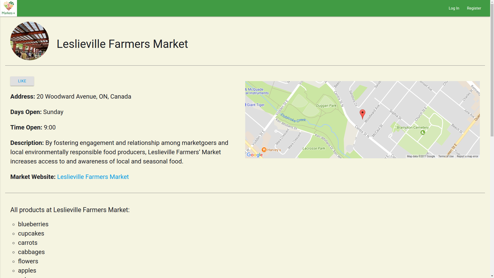
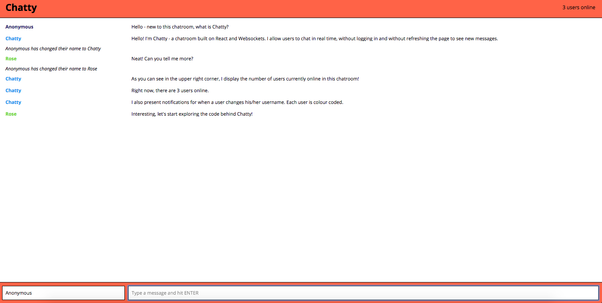
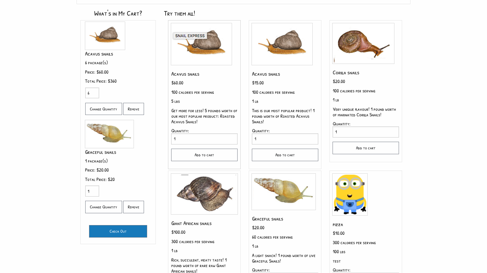
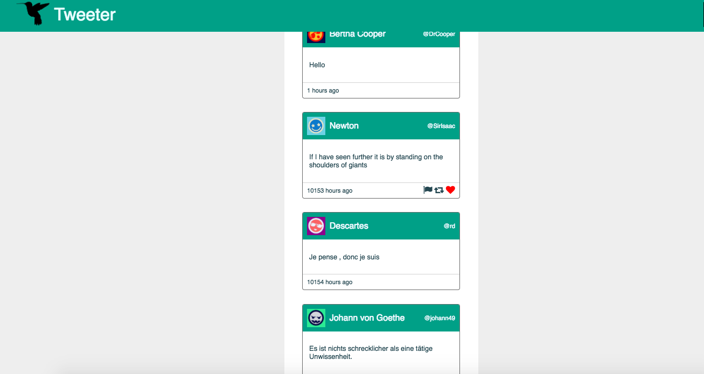
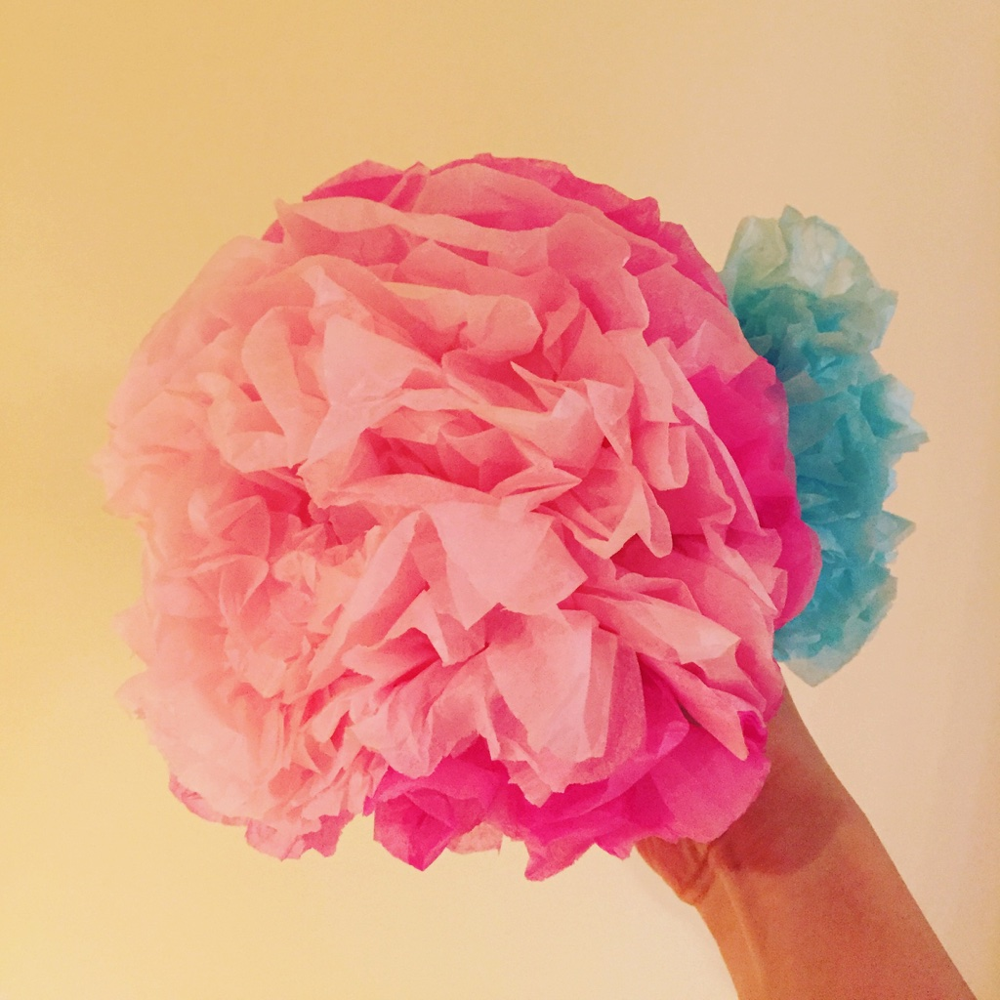

Rose Wan
Projects
-
Markets+:

A platform where farmers are able to connect with users to display all the current products and markets dependent on location, specification, and products.
-
Chatty:

A real-time one page app Built on React, Express, and WebSockets
-
Snail Express:

Snail Express is a hypothetical store ordering app for pickup, similar to Ritual. This project was made using Node, Express, Javascript, knex, PSQL, Foundation, and SASS. Communication and maps were set using APIs.
-
Tweetr:

A twitter clone, using HTML, CSS, JS, jQuery and AJAX in front-end, and Node, Express and MongoDB in back-end.
Education
Lighthouse Labs, 2017
Immersive Web Development Bootcamp, Full Time
Rapidly learning new languages and skills and implementing them in intensive projects!
Humber Business School, 2015
Postgraduate Certificate Global Business Management
University of Toronto, 2012
H.B.Sc Chemistry
Skills
-
LANGUAGES
- HTML/CSS
- SASS/Bootstrap/ Foundation/ Materialize
- Express
- Node.JS
- React
- Ruby on Rails
- Javascript
-
DATABASES
- PostgreSQL
- SQLite
- SQL
- MongoDB
